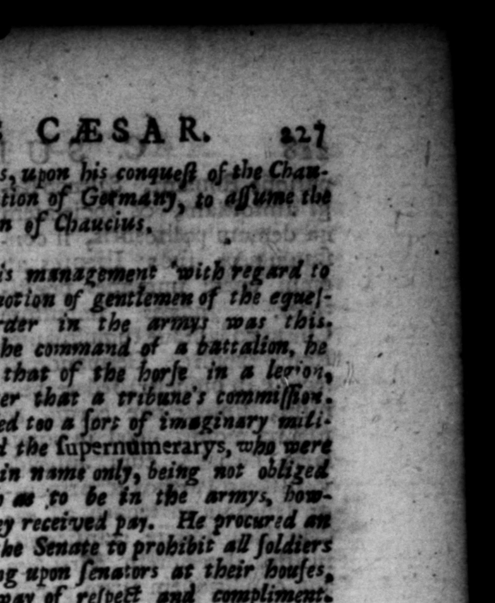
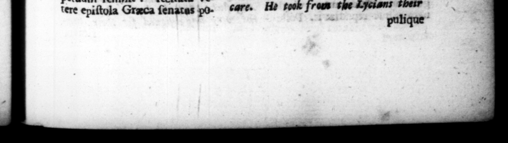

IB. C LAU DIUS CAESAR at tus rexic, Gahlnio Berundo, gun dus: up his conqueſt of tbe Chan; Chendhy. ente FR ti, 4 14 eee ee | De ends 25, Equeſtres militias 25. His nienzsrement with regard ts Galerie ut poſt cohortem, he promo lon n he 40 | alam, poſt alam, tribunarum tian ordtr im the nf was this, legions daret: ſtipendiague er tbe command of a battalion, he inſtituit, & inarie mili- gramed that of the fee in # lev'on, | tir genus, quod vocatur Su- and fte that # rribune's commilſiee, numerum, quo ablentes, He rajſed too 8 ſors of imaginary mutiX titulo renus fungerentur, Milices domos ſenatorias ſalutandi cauſa ingredi, etiam trum decreto prohibuit, Li. — qui ſe pro equitibus Romanis agerent, cavit. Ingratos & de quibus patroni quererentur, reVocavic in ſervitutem; advocatifque eorum — ſe adverſas li bertos iplorum jus dicturum. Cum quidam ægra & affeta mancipia in inſulam £Eſculapit redio medendi — — nes qui exponerentur, liberos eſſe Hauri, nec redire in ditionem domini, ſi convaluiſſenc: quod ſi quis necare quem m quam exponere, res ne per Italiz vppi aut pedibus, aut Lell, aut lectica tranſirent, monuit edicto. Puteolis & Oſtie fingulas cohortes ad arcendos incendiorum caſus collocavir. Peregrinz conditionis homi ncs vetuit uſurpare Romana nomina, duntaxat gentilitia. Civitatem Romanam uſurpantes in Campo Eſquilino ſecuri percuſſit. Provincias Achaiam & edon iam, quas Tiberius ad curam ſuam trauſtulerat, Senatui reddidit. Lyciis ob exitiabiles inter fe diſcordias libertatem ademit: Rhodiis ob itentiam veterum deli reddidit. Ilenſibus, quaſi Roman gentis auctorihus, tributa in perpetuum remiſit: recitata vetere epiſtula Graca ſenatas po» 7-17 wy the ſupernamerarys, w ers in name ouly, being not obliged 4 much as 'fo be in 7 5 — over they received pay. He procued alt act of the Senate to prohibit all ſoldiers attending upon ſenators at their buſes, ES

